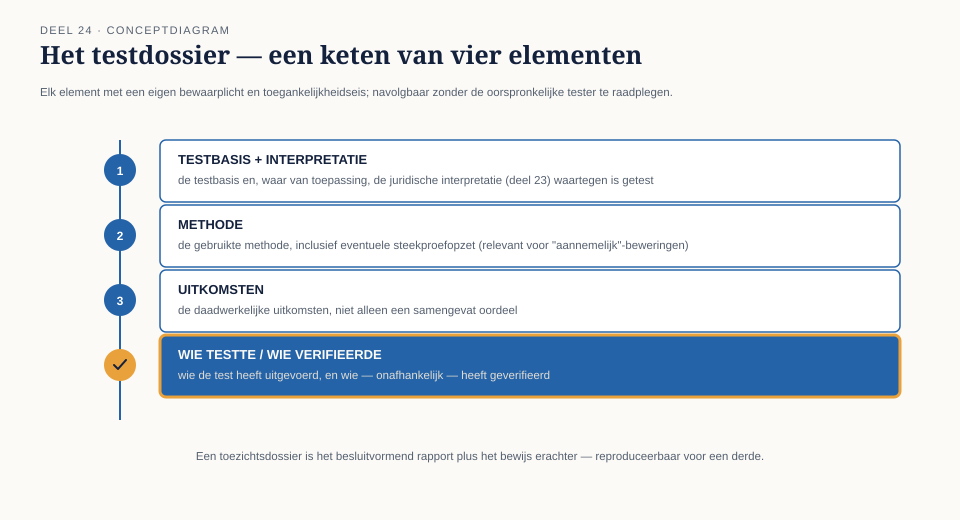

Cursus Testen en Kwaliteitsborging · Niveau 3 (ISTQB) · Deel 24 van 30
Gelijk hebben is niet genoeg.
Bij de eerste toezichtssessie met DNB kreeg Iris Verweij geen vraag over of de terugwerkende-krachtregel klopte, maar of zij dat kon aantonen — of alleen aannam dat het klopte. Dit deel behandelt wat toezicht wezenlijk anders maakt dan een interne stuurgroep: bewijslast, dossiervorming, het three-lines-of-defence-model, en de scherpe, technische betekenis van "onafhankelijk vastgesteld".
7secties
±1,5uleestijd + werkboek
4controlevragen
3lijnen (defence)
Positionering. Deze cursus is een voorbereiding op de ISTQB-expertcertificeringen van niveau 3 (CT-FT, CT-QDO, CT-AI, CTEL) en uitdrukkelijk geen vervanging van het officiële examenmateriaal van istqb.org. Alle formuleringen, figuren en werkvormen in dit materiaal zijn van Ductus; studeer voor het examen altijd óók de officiële bron.
Niveau 3: 23 Testen in de financiële sector → 24 Testen onder toezicht (hier) → 25 Het onomkeerbare testobject → 26 Testprocesverbetering → 27 Testen van AI-componenten → 28 Kwaliteit in productie en DevOps → 29 De testfunctie als tegenspraak → 30 Masterproef: "De onbewijsbare berekening"
01
"Kunt u dat aantonen?"
⏱ 10 min
Na dit deel kun je:
uitleggen wat DNB en AFM van een testfunctie verwachten bij een stelselovergang;
bewijslast en dossiervorming inrichten conform de ladder van zekerheid;
het three-lines-of-defence-model toepassen op de testfunctie specifiek;
de rol van de accountant en de certificerend actuaris plaatsen ten opzichte van het testwerk;
uitleggen wat "onafhankelijk vastgesteld" precies betekent en waarom dat een technische, geen retorische eis is.
"Kunt u aantonen dat dit klopt," vroeg de toezichthouder van DNB Iris tijdens de eerste toezichtssessie, over de terugwerkende-krachtregel uit de mutatieverwerking (niveau 2), "of neemt u aan dat dit klopt omdat het bij WGP 2.0 destijds ook zo werkte?"
Iris kon, na de lessen uit deel 23, meteen antwoorden op welke trede van de ladder van zekerheid deze specifieke regel stond — en waar niet. Dit incident vat samen wat toezicht wezenlijk anders maakt dan een interne stuurgroep (niveau 2, deel 21): een toezichthouder vraagt niet "is het goed genoeg", maar "kunt u aantonen dat het goed genoeg is, en op welke manier".
Kernzin
Onder toezicht is het niet voldoende om gelijk te hebben. Je moet kunnen laten zien wáárom je gelijk hebt, op een manier die een ander, onafhankelijk, kan navolgen.
Controlevraag
Uit Werkboek deel 24, Opdracht 24.1 — Stuurgroep of toezichthouder?
1Voor elke vraag: is dit typerend voor een interne stuurgroep (niveau 2, deel 21) of voor een toezichthouder? a. "Is dit goed genoeg om live te gaan?" b. "Kunt u aantonen dat dit klopt, en op welke manier?" c. "Wat kost dit ons in doorlooptijd?" d. "Kan een buitenstaander uw conclusie navolgen zonder u te spreken?"Toon antwoord
a. Stuurgroep. b. Toezichthouder. c. Stuurgroep. d. Toezichthouder.
02
Wat DNB en AFM verwachten
⏱ 10 min
Geen voorschrift van hoe te testen, wel van wat aantoonbaar moet zijn
Toezichthouders schrijven zelden een specifieke testmethode voor — dat zou hun rol overschrijden. Wat zij wél verwachten: dat een instelling kan aantonen dat zij beheerst risico heeft genomen, met een dossier dat een buitenstaander (de toezichthouder zelf, of een accountant) kan volgen zonder de oorspronkelijke tester te hoeven raadplegen.
Vertaald naar testwerk
Dit betekent concreet: elke testconclusie op de bovenste twee treden van de ladder van zekerheid (deel 23) moet gedocumenteerd zijn met genoeg detail dat een ander — niet Iris zelf — de conclusie kan navolgen en, waar relevant, herhalen.
03
Bewijslast en dossiervorming
⏱ 14 min
Wat een dossier moet bevatten
De testbasis en, waar van toepassing, de juridische interpretatie (deel 23) waartegen is getest.
De gebruikte methode, inclusief eventuele steekproefopzet (relevant voor "aannemelijk"-beweringen).
De daadwerkelijke uitkomsten, niet alleen een samengevat oordeel.
Wie de test heeft uitgevoerd en wie — onafhankelijk — heeft geverifieerd.

Figuur 24-1 — Een testdossier als keten van vier elementen, elk met een eigen bewaarplicht en toegankelijkheidseis.
Het verschil met een gewoon testrapport
Niveau 1, deel 9 introduceerde het besluitvormend testrapport: wat is vastgesteld, wat niet, de resterende onzekerheid. Een toezichtsdossier is dat rapport plus het bewijs erachter — niet alleen de conclusie, maar het pad ernaartoe, reproduceerbaar voor een derde.
Controlevraag
Uit Werkboek deel 24, Opdracht 24.2 — Bouw een testdossier
1Voor de terugwerkende-krachtregel uit §1: stel de vier elementen van een testdossier samen voor deze specifieke regel. Wat ontbreekt er in de praktijk vaak, en waarom juist dat element?Toon antwoord
In de praktijk ontbreekt het vaakst de expliciete vermelding van wie onafhankelijk heeft geverifieerd — teams documenteren vaak wél wat is getest, maar niet wie, los van de oorspronkelijke bouwer, de uitkomst heeft gecontroleerd. Dit element is precies waar de ladder van zekerheid (deel 23) op leunt: zonder onafhankelijke verificatie blijft een bewering op "herhaalbaar vastgesteld" hangen, nooit "aangetoond".
04
Three lines of defence, toegepast op de testfunctie
⏱ 16 min
Het model
Eerste lijn — de teams die het systeem bouwen en testen (vergelijkbaar met de whole-team-benadering, niveau 2 deel 11 en 21).
Tweede lijn — risicobeheer en compliance, die de opzet en werking van de eerste lijn beoordelen zonder zelf te bouwen of primair te testen.
Derde lijn — interne audit, die onafhankelijk vaststelt of de eerste en tweede lijn doen wat zij beweren te doen.
Figuur 24-2 — De drie lijnen als concentrische ringen, met de testfunctie primair in de eerste lijn maar met raakvlakken naar de tweede.
Waar de testfunctie zich bevindt
De tester zit primair in de eerste lijn — hij test het systeem dat het eigen team bouwt. Bij een stelselovergang van dit gewicht komt daar een aanvullende, onafhankelijke toets bovenop: een tweede-lijnsfunctie (of een externe partij) die de testresultaten zelf beoordeelt, los van het testteam. Dit is de organisatorische vorm van "onafhankelijk vastgesteld" (§6).
Hakim Osei — de derde lijn in de casus
Hakim Osei, sleutelfunctiehouder interne audit bij Meridiaan, kijkt niet naar de testresultaten zelf maar naar de vraag of het testproces betrouwbaar is: is de dossiervorming (§3) consistent, wordt de ladder van zekerheid correct toegepast, is de scheiding tussen eerste en tweede lijn in de praktijk gehandhaafd? Zijn rol is een spiegel voor het testproces, niet voor het testobject.
Controlevraag
Uit Werkboek deel 24, Opdracht 24.3 — Plaats de testfunctie in de drie lijnen
1Voor elke activiteit: eerste, tweede of derde lijn? a. Het portaalteam voert zijn eigen teamtest uit. b. Een aparte risicofunctie beoordeelt of de teststrategie van het programma toereikend is opgezet. c. Hakim Osei onderzoekt of de dossiervorming van het testteam consistent de ladder van zekerheid toepast.Toon antwoord
a. Eerste lijn. b. Tweede lijn. c. Derde lijn.
05
De rol van accountant en certificerend actuaris
⏱ 12 min
Twee verschillende, aanvullende oordelen
De accountant beoordeelt of de jaarrekening, waar de gevolgen van de invaarberekening in doorwerken, een getrouw beeld geeft — een financieel oordeel, gebaseerd mede op het testwerk maar niet identiek eraan.
De certificerend actuaris — Willemien van Ballegooijen in de casus — beoordeelt specifiek of de technische voorzieningen en de invaarberekening actuarieel verantwoord zijn, met een eigen onafhankelijke verantwoordelijkheid die niet wordt overgenomen door het testwerk, ongeacht hoe grondig dat is.
Wat dit voor het testwerk betekent
Het testwerk van Iris' team levert essentiële input voor beide oordelen, maar vervangt geen van beide. Dit is de rolgrens uit niveau 1, deel 1 in zijn scherpste vorm: de tester levert feiten en een expliciete zekerheidsindicatie (de ladder), maar het uiteindelijke oordeel — actuarieel, financieel — ligt bij een ander, met een eigen mandaat en eigen aansprakelijkheid.
Kernzin
Grondig testwerk is een noodzakelijke, nooit voldoende voorwaarde voor een actuarieel of financieel oordeel. Het levert het fundament; het oordeel zelf blijft bij wie daarvoor het mandaat en de verantwoordelijkheid draagt.
06
Wat "onafhankelijk vastgesteld" precies betekent
⏱ 14 min
Een technische, geen retorische eis
"Onafhankelijk" betekent hier niet slechts "door iemand anders" — het vereist dat de verifiërende partij geen belang heeft bij een bepaalde uitkomst, geen toegang had tot de oorspronkelijke berekeningswijze tijdens haar eigen verificatie (om te voorkomen dat zij onbewust dezelfde fout herhaalt), en een eigen, gedocumenteerd pad naar haar conclusie heeft.
Vooruitwijzing naar deel 30
De masterproef van deze cursus (deel 30) draait precies om een schending van dit principe: een referentieset die, ontdekt ná de overgang, toch uit dezelfde bron bleek te komen als de berekening die zij moest verifiëren — "onafhankelijk" in naam, niet in werkelijkheid. Dit deel legt de definitie vast die daar later op de proef wordt gesteld.
Controlevraag
Uit Werkboek deel 24, Opdracht 24.4 — Onafhankelijk, of alleen "een ander"?
1Beoordeel voor elke situatie of aan de technische eis van "onafhankelijk vastgesteld" is voldaan: a. Een collega uit hetzelfde team herberekent dezelfde uitkomst met dezelfde spreadsheet. b. Een externe partij herberekent met een eigen, apart ontwikkelde rekenmethode, zonder inzage in de oorspronkelijke berekeningswijze vooraf. c. Een tweede-lijnsfunctie controleert de uitkomst, maar gebruikt daarbij dezelfde brondata-extractie als het testteam.Toon antwoord
a. Niet onafhankelijk — zelfde team, zelfde methode, hoog risico op het herhalen van dezelfde fout. b. Wel onafhankelijk — andere methode, geen voorkennis van de oorspronkelijke aanpak. c. Gedeeltelijk — de rekenmethode kan onafhankelijk zijn, maar een gedeelde, mogelijk foutieve brondata-extractie ondermijnt de onafhankelijkheid van de conclusie. Dit laatste punt is een directe vooruitwijzing naar de masterproef (deel 30).
07
Terug naar de casus
⏱ 8 min
De vraag van de DNB-toezichthouder in §1 was geen formaliteit — het was de kern van wat dit deel behandelt. Iris kon antwoorden omdat de ladder van zekerheid (deel 23) haar dwong vooraf al na te denken over wat aangetoond was en wat aangenomen. Dossiervorming, de drie lijnen, en de scherpe definitie van "onafhankelijk" zijn stuk voor stuk manieren om die ene vraag — "kunt u dat aantonen?" — nooit onvoorbereid te laten stellen.
Huiswerk. Beschrijf, voor een testresultaat uit je eigen werk (of fictief), wat er zou moeten gebeuren om het van "herhaalbaar vastgesteld" naar "aangetoond" te tillen. Neem mee naar deel 25.
Vooruit naar deel 25. Dit deel ging over hoe je aantoont dat testwerk deugt. Deel 25 gaat over een object waarbij dat aantonen zijn zwaarste vorm bereikt: een berekening die precies één keer plaatsvindt, zonder tweede kans.
Verder naar deel 25
Dit deel ging over hoe je aantoont dat testwerk deugt. Deel 25 gaat over een object waarbij dat aantonen zijn zwaarste vorm bereikt: een berekening die precies één keer plaatsvindt, zonder tweede kans.